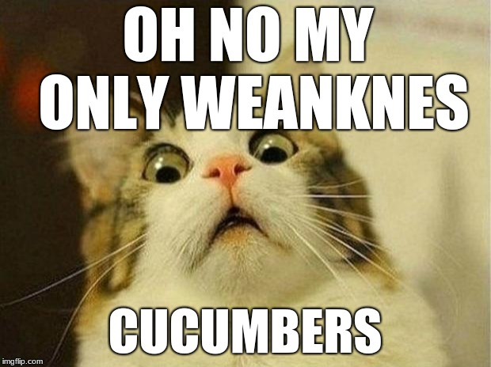

20
"Things you'll only understand if you hate cucumberrrr
1. Very few people understand you.
2. In fact, they may get aggressive at the mention of your repulsion. Which doesn’t make any sense because have you smelt those things?
3. You shudder at the thought of those slimy sonsabitches on your eyes for ‘relaxation’.
4. You can’t remember the last time you bought a ready-made salad. They’re the cucumber’s natural habitat and you avoid them like the plague.
5. Same goes for ready-made sandwiches and wraps. It’s a scary world out there
6. The thought of cucumber in water or as a way to ‘enhance’ a beverage makes you gag.
7. You’ve wept over the ruining of a perfectly good meal by cucumber poisoning.
8. "No, I can’t just eat around it. Everything is tainted.”
9. The smell (or touch) alone has you grumpy for hours.
10. As far as you’re concerned, cockroaches are brothers in arms as they’re also repulsed by that insidious green dong. Ain’t no shame. Every man (and roach) is needed in the resistance.
11. You’ve lost your cool when it’s been included in a meal despite not being on the menu #sorrynotsorry.
12. You’ve shown everyone those videos of cuke’s scaring cats to legitimise your struggle.
13. You’ve grabbed what you thought was zucchini at the shops only to come home, realise your folly and fly into a rage.
14. You’ve referred to it as the Catch Me If You Can of vegetables i.e. it’s really a fruit and shouldn’t be trusted.
15. You’ve faked being allergic just to avoid it and the conversation that must accompany, “seriously, no cucumber.”
16. Urban Dictionary defines it as “A female sexual toy cleverly disguised as a vegetable” and while you’re down with being open and free with one’s sexual self…. you’d rather eat your own hair than go down that road.
17. Surprisingly, you’re okay with pickles.
18. “Just try it” is met with derision so sharp it could slice a damn cucumber.
19. If stranded on a desert island with only cucumber to eat… you’d gladly starve.
20. Gazpacho sucks.